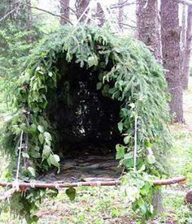

Abrigos
- Escolha um local elevado e seco, longe de rios e vales.
- Use galhos e folhas para isolamento térmico.
- Monte o abrigo com uma entrada voltada contra o vento.
- Crie uma camada de folhas secas como colchão natural.

Alimentação
- Identifique plantas e frutos seguros antes de consumir.
- Priorize fontes de água potável e fervida.
- Evite alimentos com cheiro ou gosto amargo desconhecido.
- Use armadilhas simples para capturar pequenos animais.

Sinais de Socorro
- Monte fogueiras em formato triangular — sinal internacional de SOS.
- Use espelhos ou metais para refletir luz do sol.
- Desenhe sinais grandes no chão com pedras ou galhos.
- Mantenha uma fonte de fumaça visível durante o dia.

Primeiros Socorros
- Limpe ferimentos com água limpa e cubra com pano esterilizado.
- Improvise talas com gravetos e panos firmes.
- Controle sangramentos com compressão direta.
- Mantenha o ferido aquecido e calmo até ajuda chegar.